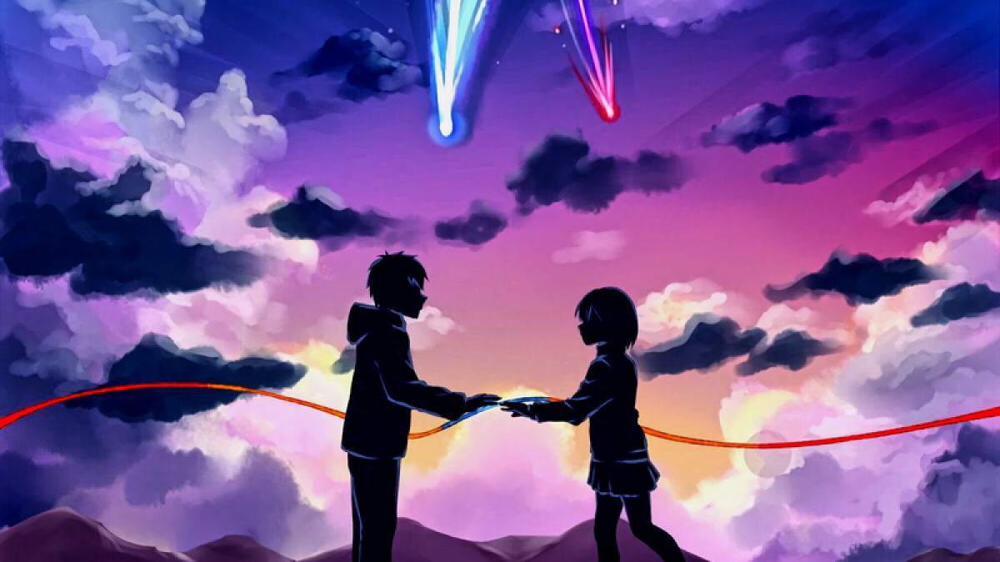

Anime (アニメ) significa animación en japonés. En Japón, anime se refiere a todo tipo de animación , incluso a los dibujos animados estadounidenses.
Para el resto del mundo, el anime se refiere específicamente a la animación japonesa, más específicamente a la animación de Japón en un estilo específico.
Fuera de Japón, el anime se caracteriza por personajes bellamente dibujados con ojos grandes. En comparación con los dibujos animados, los personajes están
mejor definidos y tienen un aspecto "realista", y la trama suele ser más compleja con el desarrollo del personaje y la progresión de la historia en lugar de
episodios aleatorios. Aunque hay animes que no encajan en este estereotipo.
Origen del anime, el primer anime que existió

¿Cuándo exactamente comenzó el anime?
La animación japonesa existe desde hace mucho tiempo, desde 1917 cuando se lanzó el primer anime japonés "Namakura Gatana (なまくら刀)" .
El cortometraje tiene solo 4 minutos de duración, en blanco y negro, y no tiene sonido. Puede ver la versión restaurada digitalmente
según lo proporcionado por el Archivo Nacional de Cine de Japón.
El rostro del anime moderno por el padre del manga “Tezuka Osamu”
Sin embargo, la imagen del anime moderno solo tomó forma en la década de 1960 gracias a la figura legendaria, Tezuka Osamu (手塚 治虫)
con el lanzamiento de la serie de anime Astro Boy en 1963 . La primera de su tipo, la adaptación al anime de Astro Boy se transmitiría una vez
a la semana con una duración de 30 minutos por episodio. Tezuka Osamu presentó a su equipo de producción. Muchos estaban horrorizados y pensaron
que la hazaña era imposible, sin embargo, esta es ahora la norma para las transmisiones de anime en Japón.
Tezuka Osamu, reconocido como el creador más influyente en manga seguido por anime, originalmente oriundo de Osaka.
Bien encaminado a convertirse en médico, incluso obteniendo una licencia de médico, eligió cambiar el curso de su vida para perseguir
su verdadera pasión de convertirse en un artista de manga. Una decisión que cambió toda la industria del manga y el anime tal como la conocemos.
Las obras más famosas de Tezuka Osamu, además de Astro Boy, incluyen a Buda, Dororo, Kimba el león blanco, Fénix y Black Jack. Logró un gran éxito
al presentar sus obras a lectores y audiencias en el extranjero, allanando el camino para el interés y la recepción internacional en las obras de
anime y manga.
Anime por género
Romance
Los animes de género romántico son súper populares con una amplia gama de historias. Los escenarios más comunes son la vida escolar,
pero también hay romance en el lugar de trabajo. Hay animes de género romántico independientes, pero también muchos títulos que se cruzan con
otros géneros como fantasía, aventura, isekai y comedia (formando el popular género de comedia romántica).
Los fanáticos asocian fuertemente el anime romántico con la demografía shoujo, pero ese no es siempre el caso.
1「五等分の花嫁」| Gotoubun no Hanayome | Las quintillizas por excelencia (harén, comedia)
2「CLANNAD」(drama, sobrenatural)
3「とらドラ!」| Toradora (comedia, drama, rebanada de la vida)
4「男子高校生の日常」| Danshi Koukousei no Nichijou | Daily Lives of Highschool Boys (humor de broma, vida escolar)
5「ぐらんぶる」| Grand Blue (vida universitaria)
Aventura
Las aventuras son historias similares a 「冒険 bouken」 con personajes principales que atraviesan tierras o alrededor del mundo con un objetivo en mente.
No debe confundirse con el género de acción que no tiene aventura, solo lucha y violencia. Anime con géneros de aventura y acción significa que habrá
algunas peleas y violencia a lo largo del viaje.
1「One Piece」 (aventura marina, acción, fantasía)
2「POKEMON」(aventura, acción, fantasía)
3「不滅のあなたへ」| Fumetsu no Anata e | A tu eternidad (mundo, aventura, drama, sobrenatural)
4「少女終末旅行」| Shoujo Shuumatsu Ryoukou | Girl's Last Tour (aventura en el páramo, parte de la vida, ciencia ficción, misterio)
5「宇宙よりも遠い場所」| Sora yori mo Tooi Basho | Un lugar más lejano que el universo (Aventura en la Antártida, drama)
Acción
Compáralo con los títulos de “Aventura” que no tienen temas de acción. El anime de acción contiene peleas y violencia.
1「呪術廻戦」| Jujutsu Kaisen (sobrenatural)
2「東京リベンジャーズ」| Tokyo Revengers (sobrenatural, drama)
El anime deportivo siempre ha sido popular entre los títulos amados de antaño como Slam Dunk y Captain Tsubasa. Sin embargo, en los últimos años,
la popularidad del anime deportivo ha subido a mayores alturas trayendo muchas otras formas de deportes al género. Incluso hay bailes de salón,
tiro con arco y patinaje artístico ahora.
1「ユーリ!!! en ICE」| ¡¡¡Yuri!!! Sobre hielo (patinaje artístico)
2「ツルネ」| Tsurune (Kyudo - tiro con arco japonés)
3「テニスの王子様」| Tenis no Ouji-sama | Príncipe del tenis (tenis)
4「ハイキュー!!」| ¡¡Haikyuu!! (vóleibol)
5「はじめの一歩」| Hajime no Ippo (boxeo)
Rebanada de vida
Los animes de Recuentos de la vida se centran en la vida cotidiana de los personajes. Algunas partes de la vida tienen una trama central en la que la parte
de la vida es solo un subgénero de la trama, pero también hay anime centrado en la parte de la vida sin una trama principal y cada episodio de anime es
solo un fragmento de la vida.
1「しろくまカフェ」| Café Shirokuma | Polar Bear Cafe (café, vida cotidiana)
4「小林さんちのメイドラゴン」| Dragón Kobayashi-san Chi no Maid | Maid Dragon de Miss Kobayashi (vida cotidiana, fantasía)
5「K-On!」 (vida escolar, música.
Misterio
Los animes de misterio son solo eso, animes enfocados en descubrir misterios. El anime de misterio puede ser desconcertante hasta la revelación final,
a veces bastante tarde en el anime o al final de un episodio. Los temas comunes asociados con el anime de misterio son el crimen, el detective,
el thriller y el suspenso e incluso lo sobrenatural.
1「僕だけがいない街」| Boku dake ga inai Machi | Borrado (psicología, crimen)
2「氷菓」| Hyouka (rebanada de vida)
3「すべてがFになる」| Subete ga F ni naru | The Perfect Insider (crimen, psicología, suspenso)
4「憂国のモリアーティ」| Yuukoku no Moriarty | Moriarty the Patriot (histórico, suspenso)
Puede ser difícil distinguir entre el anime sobrenatural y el de fantasía, ya que ambos involucran escenarios inusuales y antinaturales. La distinción
entre ambos también puede ser bastante subjetiva , algunas personas eligen separarlos por espeluznante : sobrenatural por yokai y espectros fantasmales
que invocan miedo, fantasía por magia y dragones que invocan asombro; mientras que algunos eligen separarse por la aceptación de los personajes del entorno :
sobrenatural significa algo fuera de la norma en el mundo, la fantasía es un entorno predominante en el mundo.
Anime Sobrenatural
1「千と千尋の神隠し」| Sen a Chihiro no Kamikakushi | Spirited Away (aventura)
2「蟲師」| mushishi (yokai)
3「物語」| Serie Monogatari (yokai)
4「青春ブタ野郎はバニーガール先輩の夢を見ない」| Seishun Buta Yarou wa Bunny Girl Senpai no Yume wo Minai | Rascal no sueña con Bunny Girl Senpai (comedia romántica)
5「斉木楠雄のΨ難」| Saiki Kusuo no Ψ-nan | La vida desastrosa de Saiki K. (superpoder, comedia, rebanada de vida)
anime de fantasia
1「HUNTER×HUNTER」(aventura, acción)
2Re：ゼロから始める異世界生活」| Re: Zero kara Hajimeru Isekai Seikatsu | Re:ZERO -Starting Life in Another World- (isekai, romance, drama)
3「狼と香辛料」| De Ookami a Koushinryou | Spice and Wolf (romance, drama)
4「転生したらスライムだった件」| Tensei shitara limo Datta Ken | Esa vez me reencarné como limo (isekai, aventura)